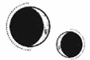

CAPÍTULO 76
Julius 1789
Lila jadeó, ahogó un sollozo y bajó los escalones de entrada con torpeza. Llevaba una prótesis algo tosca y se apoyaba en una muleta, pero eso no le impidió tirar de Helena para estrecharla entre sus brazos con ferocidad.
—Hel, Hel, estás viva de verdad.
Lila recorrió a su amiga con las manos. Le tocó la cara y los hombros como si no terminara de creerse que Helena era real.
Pero ella estudió a Lila con la misma incredulidad. Pese a que ya sabía que estaba viva, se había acostumbrado a pensar que todo el mundo había muerto, por lo que le resultaba imposible asimilar la situación.
Lila parecía distinta. Se había teñido el pelo rubio de castaño y estaba demacrada por el cansancio. Todavía tenía esa cicatriz dentada en el lateral del rostro y lloraba mientras abrazaba a Helena.
—Lila…
Tenía la sensación de que le iba a estallar el corazón. No había esperado que su reencuentro la conmovería de una manera tan visceral al recordarle que todos los demás las habían dejado.
—Pensaba que no volvería a verte nunca. Mírate. Estás en los huesos.
Lila recorrió el cuerpo de Helena con la mirada, pero se detuvo al reparar en su vientre.
—Ya lo sabías, ¿verdad? —preguntó Helena con un nudo en el pecho—. Kaine me dijo que se había mantenido en contacto contigo.
Su amiga asintió despacio y, cuando Kaine se bajó del lomo de Amaris tras ellas, levantó la cabeza de golpe, como si no hubiera reparado en su presencia hasta ese momento.
—¿Qué estás haciendo tú aquí?
Se lanzó a por él sin previo aviso y Helena tuvo que interponerse entre ellos, empujando a Lila para que se separara de él.
—Hemos escapado juntos. No le hagas daño, que ya no es un inmarcesible.
Un brillo implacable cruzó los ojos azules de Lila.
—¿En serio?
—No te equivoques, Bayard, que no te va a ser más fácil matarme que antes. Como pierdas alguna extremidad más, no podrás hacer nada para proteger a ese pequeño principadito tuyo.
Lila gruñó como un gato montés, dispuesta a arrancarle los ojos en cualquier momento.
—Parad ya los dos —intervino Helena, furiosa al ver cómo habían conseguido arruinar su reencuentro en menos de un minuto.
Lila no intentó atacar más a Kaine, pero no dejó de fulminarlo con la mirada.
—Supongo que no debería sorprenderme que al final murieras intentando salvarla.
—Cierra el pico, Lila —le espetó Helena—. He sido yo quien lo ha traído hasta aquí. Si quieres enfadarte con alguien porque siga vivo, tendrás que hacerlo conmigo.
Lila se volvió para mirar a Helena con una expresión incrédula que se transformó en una resignación desconsolada. Dio un paso hacia atrás.
—Está bien. No volveré a decir nada, pero aleja a ese bicho de aquí. No quiero que se acerque a Pol.
—Ve tú con ella —le dijo Kaine a Helena— y no te preocupes por mí. Ya sabía que mi reencuentro con Bayard no iba a ser precisamente agradable.
Se dirigió hacia Amaris para meterla en el establo.
Cuando desaparecieron de su vista, Helena se volvió hacia Lila. De pronto, se sentía agotada. Una parte de ella había creído que la felicidad les duraría un poco más, pero el momento ya parecía haber pasado.
Tampoco esperaba que la situación fuese a ser fácil; al fin y al cabo, estaban rodeadas por un océano de pérdidas. Ni siquiera alcanzaba a imaginar lo que Lila debía de sentir al ver a Kaine después de todo lo sucedido. Aunque no esperaba tener que justificar algo tan personal como su relación nada más verse.
—Si le haces daño, no te lo perdonaré nunca —le advirtió a Lila.
—Podrías aspirar a alguien mucho mejor —dijo Lila negando con la cabeza.
—No. Kaine es la persona que necesito y quien me ayudó a salvarte.
En los labios de Lila se acumularon una multitud de protestas, pero acabó apartando la mirada y diciendo:
—Vamos adentro.
Helena no se dio cuenta de que Lila todavía llevaba grilletes hasta que no la vio a la luz. Aunque no eran de supresión completa como los que Helena había tenido que soportar, bastaban para debilitar la resonancia de su amiga.
—¿No te los ha quitado nunca? —le preguntó Helena.
Lila bajó la vista con un gesto incómodo.
—Sí, durante un tiempo, pero entonces intenté arrancarle el talismán. Cuando desperté… —Meneó la muñeca—. Hace ya tiempo de eso.
Helena miró a su alrededor. La casa era pequeña y se notaba que llevaban viviendo allí un tiempo. Contaba con una cocina, una mesa y una cama en la esquina más alejada de la puerta, oculta tras una cortina. Todo era tan mundano que no terminaba de encajar con Lila. No tenía nada que ver con la Academia, con Solis Splendor y su resplandeciente armadura de paladina.
—¿Has estado aquí todo este tiempo? —preguntó confundida.
Lila negó con la cabeza.
—No, cuando Ferron creía que te encontraría pronto, te estuvimos esperando al otro lado del río, en Novis. Luego nos trajo a Pol y a mí hasta aquí. —Esbozó una débil sonrisa—. Está durmiendo, pero ¿quieres verlo?
Helena la siguió tímidamente y ambas se asomaron a la cortina para ver a un niñito pequeño durmiendo en la cama. Tenía los cabellos dorados, las mejillas regordetas, las pestañas oscuras y espesas, y unos brazos y piernas rechonchos extendidos como una estrella de mar.
Lila contempló a su hijo con una intensa adoración.
—Le va a hacer mucha ilusión tener compañía —susurró—. No solemos bajar mucho al pueblo, así que pasamos solos la mayor parte del tiempo.
—¿Nunca has pensado en huir?
—No habría podido —dijo tragando saliva—. Al principio, por el embarazo y, luego, por tener que cuidar del bebé. Y me faltaba la pierna. Para cuando nos dejó en esta casa…, comprendí que no tenía adónde ir. Ferron me dijo que, si intentaba escapar a algún lugar como la corte de Novis, no verían en mí más que a una paladina deshonrada con un hijo ilegítimo, aunque me hubieran creído al revelarles mi identidad. Y, en caso de que decidieran considerar a Pol como un principado, no permitirían que alguien como yo lo cuidara y lo protegiera. Buscar a la familia de mi madre también habría sido peligroso. Por si fuera poco, cada vez que pensaba en marcharme, me aterraba considerar la posibilidad de que aparecieras y yo ya no estuviese aquí.
Lila corrió la cortina del todo para que la luz no molestara a Pol y se dio la vuelta.
—Ferron le dio dinero a alguien del pueblo para que se asegurara de que no nos morimos de hambre, porque no se me da muy bien trabajar la tierra. Tenemos gallinas y unos patos horribles. Ahora también tejo, igual que mi madre, aunque Pol no para de crecer y toda la ropa se le queda pequeña casi en cuanto la termino.
—Sabes que no vamos a quedarnos aquí, ¿no? Nos marcharemos en barco.
La expresión de Lila se endureció, pero asintió con la cabeza.
—Ya, Ferron me habló de su plan, aunque ha dicho tantas cosas que he aprendido a no esperar mucho de sus palabras. —Exhaló—. ¿De verdad… de verdad va a venir con nosotros? ¿En serio vas a… jugar a las casitas con él?
Helena se tensó.
—Sí. Nosotros siempre tuvimos la intención de huir juntos. Le pedí a Kaine que te incluyera en el plan porque Luc me pidió que me asegurara de poneros a Pol y a ti a salvo.
Lila la miró estupefacta.
—¿Viste a Luc antes de que…?
A Helena le dio un vuelco al corazón al darse cuenta de que tendría que contarle una mentira. ¿Sería capaz de hacerlo? ¿De ocultarle la verdad para siempre? Cuando se disponía a hablar, vio lo desesperada que estaba su amiga por aferrarse a la memoria de Luc, por escuchar sus últimos momentos, y tragó saliva.
—Aquel día estaba preocupada por él, así que salí del Cuartel General. Nos… nos reconciliamos justo antes de que Luc regresara. Creo que, de algún modo, sabía que la guerra iba mal y por eso me pidió que le prometiera que cuidaría de ti. Eso fue lo último que me dijo.
A Lila se le escapó un sonido roto y jadeante.
—¿Sabes cómo lo capturaron? ¿Cómo consiguieron llegar hasta él?
Helena apretó los labios y negó con la cabeza. Hasta donde todo el mundo sabía, Lucien Holdfast había muerto ante los escalones de entrada de la Torre de Alquimia. Eso era lo que figuraría en los anales de la historia y lo que Lila tendría que creer.
Kaine entró en la casa y Lila borró todo rastro de sus emociones de su rostro. La temperatura de la estancia pareció descender de golpe. Sin embargo, Kaine no le prestó atención; solo tenía ojos para Helena. Frunció el ceño.
—¿Le has dado algo de comer? —le preguntó a Lila.
—No… —La chica miró a Helena—. ¿Tienes hambre?
—Está embarazada y hemos tenido que racionar la comida del viaje, por lo que apenas ha comido nada estos días —explicó Kaine con mala cara.
—Podrías habérmelo dicho.
Lila se acercó a un armario y, tras rebuscar en su interior, cogió una jarra de leche, un poco de pan, queso y un racimo de uvas, y lo dejó todo en la mesa. Helena se obligó a comer algo con desgana porque sabía que Kaine la estaba vigilando, pero tenía el estómago todavía revuelto y no sabía si era por el cansancio del viaje o por su nerviosismo general, acrecentado por el reencuentro con Lila y la certeza de que su situación nunca sería fácil.
—Antes de que nos vayamos, tenemos que quitarle los grilletes a Lila. ¿Y hay alguna manera de conseguir materiales con los que prepararle una prótesis?
A Lila se le iluminó el rostro ante aquella pregunta, pero Kaine apretó los dientes y suspiró.
—No va a hacer falta.
Metió la mano en el bolsillo, sacó una llavecilla delgada y se la lanzó a Lila. Sin dar más explicaciones, salió de la casa y regresó poco después con un cofre metálico cubierto de tierra, como si acabara de desenterrarlo. Tras abrir el candado con facilidad, Lila descubrió que lo que guardaba en su interior era su prótesis, envuelta en una tela impermeable pero algo golpeada.
—¿Ha estado aquí todo el tiempo? —le preguntó Lila tras permanecer un buen rato muda de asombro.
—La traje antes de que tú llegaras, pero no confiaba en que no fueras a atraer miradas indeseadas. Mi intención era explicarle a Helena dónde encontrarla. Estaba entre los escombros tras la explosión.
Helena comprobó que todos los componentes de la prótesis de Lila funcionaban como debían antes de volvérsela a colocar.
—Lumitia entrará en plena latencia en tres días —apuntó Kaine—. Las rutas comerciales llevan funcionando quince días, pero ahora el mar estará más calmado, y los barcos, más concurridos. Nos ayudará a pasar desapercibidos.
—¿Adónde vamos exactamente? —preguntó Lila mientras Helena equilibraba la prótesis.
—Hay cientos de islas entre Etras y el continente. Nuestro destino es una de las más pequeñas, cerca de un enclave comercial.
Helena conoció a Apollo Holdfast al día siguiente.
Pol había escondido el rostro contra el cuello de Lila con timidez, pero dejó que sus ojos recorrieran el rostro de Helena cuando su madre se la presentó. Era un niño robusto que había heredado la constitución de los Bayard, así que bastaba un vistazo para saber que sería muy alto cuando creciera.
—Esta es tu madrina, Helena —le dijo Lila enterrando el rostro en su cabello rubio y revuelto—. ¿Te acuerdas de lo que te he contado de ella? Era una de las mejores amigas de tu padre y siempre cuidó de nosotros. Ahora… —Lila tragó saliva—. Ahora me va a ayudar a cuidar de ti. ¿No es genial? Ha venido hasta aquí con Ferron. A lo mejor no te acuerdas de él, pero lo conociste cuando eras más pequeño.
Pol se asomó entre los cabellos de Lila para estudiar a Helena con una mirada llena de vida, igual que la de Luc, y fue como reencontrarse con él, con la versión joven de su amigo que había desaparecido ante sus ojos.
Se le formó un nudo en la garganta que por un instante le impidió hablar.
—Hola, Pol, me alegro de conocerte por fin.
El niño ahogó una risita y se cubrió el rostro con la mano.
—Le cuesta un poquito abrirse, pero todavía no ha conocido una criatura viva de la que no haya querido hacerse amigo.
—Se parece muchísimo a Luc.
A Helena no se le ocurría nada más que decir. Lila había empezado a explicarle algo sobre la dentición, pero el corazón empezó a latirle con tanta fuerza que dejó de oír lo que le estaba diciendo.
—Creo que Helena necesita descansar —la interrumpió Kaine sin andarse con rodeos.
Lila se quedó de piedra, pero observó con atención a su amiga y asintió.
—Claro. Pol y yo tenemos que salir a darles de comer a las gallinas. Vamos, campeón.
Helena los vio salir por la puerta y se fijó en que Lila volvía a moverse con soltura. Cuando miró a Kaine, estuvo a punto de dar un respingo. Tenía el pelo castaño, casi tan oscuro como antes de que se le volviera plateado. El contraste con su piel y sus ojos pálidos hacía que sus rasgos fueran más pronunciados. Se había puesto un atuendo discreto compuesto por unos pantalones marrones y una camisa de tejido áspero, pero aun así nadie lo confundiría con un granjero cualquiera.
—No te gusta —dijo llevándose una mano a la cabeza.
Helena no pudo dejar de mirarlo.
—No estoy acostumbrada a verte así —dijo. Casi sintió el impulso de echarse a reír al tocarle el pelo y recordar el momento en que había empezado a perder el color—. Voy a echar de menos el plateado.
—No es permanente, así que todavía lo verás de vez en cuando.
Pero ya apenas reconocía a Kaine en él. Helena permaneció dentro de la casa, pues la amplitud e inmovilidad del paisaje le ponía los pelos de punta cada vez que salía. Sin embargo, después de haber vivido tanto tiempo en peligro, moviéndose de un lado para otro, la casita de Lila era tan normal que tampoco parecía real. Kaine y Lila se turnaban para hacerle compañía. Cuando Lila se quedaba con Helena, Kaine se marchaba y no volvía a aparecer hasta que Lila salía con Pol.
Helena supuso que él estaba ocupado ultimando los preparativos del viaje hasta que Lila le comentó que estaba en el establo. Siempre se iba al establo. Al oírlo, Helena se apresuró a salir y se detuvo un instante antes de entrar en el sombrío edificio.
Tal y como su amiga había dicho, Kaine estaba sentado en el suelo junto a Amaris, que tenía la enorme cabezota apoyada sobre su regazo. Kaine, que le estaba rascando la parte de atrás de las orejas a la quimera, no levantó la vista cuando entró.
—Debería sacrificarla —dijo con voz queda—. Sería la opción más compasiva, porque no va a entender que la deje atrás.
A Helena se le encogió el corazón al acercarse.
—Dijiste que podía cazar y cuidarse sola.
Él asintió.
—Pero las transmutaciones se irán desgastando con el tiempo y acabarán matándola, igual que le pasó al resto. Y eso sin contar con la posibilidad de que cualquier otra criatura la ataque primero. Además, si la ven merodeando por esta zona, podría conducir a los inmarcesibles hasta nosotros.
—¿Se sabe algo de Morrough?
—No, estamos demasiado lejos y no han llegado noticias todavía.
Helena contempló a Amaris.
—Ya no va a crecer más, ¿no? Si ya no depende de la transmutación, le irá bien.
Kaine guardó silencio durante un rato.
—No merece la pena correr ese riesgo.
—No creo que sea del todo justo no darle una oportunidad de sobrevivir —dijo Helena con un nudo en la garganta—. No estaríamos aquí de no ser por ella.
—Solo es un animal.
Helena no respondió porque no hablaba con ella. Era evidente que llevaba varios días dándole vueltas al tema. Amaris levantó la cabeza, dejó escapar un gimoteo ronco y le lamió toda la cara. Kaine frunció el ceño y le empujó el hocico para apartarla.
Echó la cabeza hacia atrás con un suspiro.
—Después de matar a tantísima gente, no me puedo creer que me estén entrando los remordimientos con un animal.
La mañana en que se marcharon, Kaine se levantó en silencio y fue al establo mientras Lila guardaba las últimas pertenencias que tenía intención de llevarse. Helena se quedó en tensión cuando él desapareció en el interior y el estómago se le retorció hasta formar un doloroso nudo.
Kaine salió un minuto más tarde y se quedó mirando el cielo durante tanto rato que a Helena se le desbocó el corazón. Cuando volvió a entrar en la casa, se detuvo detrás de ella.
—Algún día, tu misericordia nos traerá problemas —susurró apoyándole una mano en el hombro.
—Bastantes muertes llevamos ya a las espaldas como para añadir otra muerte más —le dijo ella posando la mano sobre la suya.
Kaine le dio un apretón en el hombro.
—Es hora de irse, Bayard —dijo un minuto más tarde.
El mar permanecía embravecido, incluso en ese momento de marea baja en que sus aguas solían calmarse. El puerto estaba plagado de recién llegados y viajeros a punto de marcharse. Su documentación falsa les estaba esperando en la oficina postal de la ciudad.
Helena ya había olvidado lo diferente que podía llegar a ser el mundo. La forma de vestir y las costumbres del Norte eran tan uniformes que se había acostumbrado a ellas, pero, una vez al año, durante la latencia, la ciudad portuaria se convertía en un crisol de marineros y viajeros llegados de todas partes del mundo para aprovechar la oportunidad de desplazarse de un continente a otro en unas pocas semanas, en vez de tardar meses.
Había bastantes norteños como para que Kaine y Lila pasaran desapercibidos, mientras que Helena se confundía con sus compatriotas etrasianos. No había visto tantas melenas rizadas y oscuras y pieles oliváceas juntas desde que se había marchado de su país natal. Por si fuera poco, le sorprendió oír a varias personas hablando etrasiano despreocupadamente y descubrir que había pasado tanto tiempo que incluso le costaba entenderlo.
Descendieron desde el acantilado hasta un muelle de embarque y Helena se aferró a la mano de Kaine como si su vida dependiera de ello mientras esperaban a que les revisaran los papeles y los billetes.
La cubierta del barco estaba abarrotada. Lila tenía tanto miedo de que le dieran un empujón y Pol cayera al mar que entraron enseguida para buscar una escotilla junto a la que sentarse en vez de quedarse en la proa.
Helena sentía el corazón a punto de salírsele del pecho: temía que alguien los reconociera, que alguien levantara la vista y pronunciara el nombre de alguno de ellos.
Kaine permaneció tenso y alerta. Helena notaba su resonancia siguiendo el ritmo de sus latidos mientras le dibujaba círculos con el pulgar en la palma de la mano, ayudándola a mantener el contacto con la realidad. Una sonora voz norteña se alzó por encima del clamor en la mesa de al lado.
—Estoy intentando llevar tanto aceite al otro lado del charco como pueda antes de que estalle de nuevo la guerra. Los libertadores pagarán un riñón por él cuando ataquen Paladia.
Lila se volvió hacia el hombre.
—¿De qué guerra habla?
Los dedos de Kaine se crisparon y se cerraron en torno a la muñeca de Helena. Entre los preparativos y el esfuerzo por mantener la paz, ella había decidido no mencionar la situación en que había quedado el país cuando huyeron.
Un norteño con un bigote poblado y patillas miró a Lila.
—¿Es que no ha leído las noticias? El Sumo Inquisidor de Paladia por fin ha muerto. Novis y el resto de los países vecinos deberían atacar en cualquier momento. Ha sido portada en todos los periódicos de los últimos días.
Lila pareció quedarse blanca.
—¿Tendría alguno a mano?
El hombre rebuscó en el bolsillo de su levita y sacó un panfleto.
—¿Ve? Tendrán que recurrir a una buena cantidad de maquinaria para encargarse de todos los cadáveres o lo que sea que los nigromantes hayan estado cocinando, así que necesitarán aceite. Si logro ir a Khem y regresar antes de la sublimación, me haré de oro. En cualquier caso, incluso viajar por tierra me saldría rentable si consigo ser el primero en llegar. Debería haber visto el precio del opio hace unos años. —Se le levantó el bigote al sonreír—. No hay nada como una guerra para ganar un buen dinero.
Los tres estaban demasiado distraídos leyendo el periódico como para responder. No era una publicación al uso compuesta de artículos, sino una especie de boletín, de esos que solían leer los hombres de negocios.
En la parte superior, el titular de la primera noticia rezaba en negrita: «El Sumo Inquisidor ha muerto», seguido de un texto en letra más pequeña: «El mundo entero ha suspirado aliviado ante la noticia de que el magnate del acero y heredero del gremio del hierro, Kaine Ferron, más conocido como el Sumo Inquisidor, ha fallecido en el último ataque de la Resistencia, lo cual ha dejado herido de muerte al régimen de los inmarcesibles».
Helena se aferró a la mano de Kaine al leer el titular de la siguiente noticia: «El estandarte de la Llama Eterna se alza de nuevo: ante la alianza contra Paladia, algunos recuerdan a los combatientes caídos».
—¿Vosotros sabíais esto? —preguntó Lila por fin.
Kaine no respondió a su pregunta, mientras que Helena habló en voz baja y extendió la mano para darle un suave apretón en la muñeca desnuda a su amiga.
—Sabíamos que se estaba buscando una alianza, pero no esperábamos que se alcanzara un acuerdo tan deprisa. Tampoco estábamos seguros de que se fuesen a creer lo de la muerte del Sumo Inquisidor.
Lila se recostó contra el asiento estrechando a Pol entre sus brazos, pero había desviado la mirada hacia la escotilla para contemplar el continente mientras la bocina del barco sonaba, indicando que estaba a punto de zarpar.
—No tenía ni idea —dijo mientras negaba con la cabeza.
Helena pasó mareada la mayor parte del viaje, pues el embarazo empeoraba las náuseas que en cualquier otra ocasión habrían sido tolerables. Cuando llegaron a una de las islas mercantes principales, todavía tenía la sensación de estar a punto de vomitar. Kaine les ofreció la opción de descansar en una posada y terminar el viaje al día siguiente, pero Helena sabía que él prefería dejar el mínimo rastro posible. Cuantas menos paradas hicieran y menos hablaran con desconocidos, más difícil sería rastrear sus movimientos. Se subieron a un autobús para desplazarse al otro lado de la isla, cuyo paisaje era completamente distinto del Norte. La ciudad se extendía a lo ancho en vez de a lo alto como en Paladia y la mampostería no tenía nada que ver con la arquitectura alquímica. Una vez que se bajaron del autobús, se subieron a un carromato que los condujo hasta su destino.
La carretera era amplísima y estaba pavimentada para que se pudiera cruzar a la isla más pequeña cuando la marea bajaba. Dado que la latencia había hecho que el mar se retirara por completo, el fondo marino había quedado al descubierto, unos metros por debajo de la calzada. Había gente caminando por allí, recogiendo los tesoros que el agua hubiera dejado a su paso.
Helena y su padre solían salir cuando la marea bajaba para buscar conchas y tesoros, y estudiar los peces que quedaban atrapados en las balsas de agua que quedaban. Era una práctica muy popular durante la latencia, puesto que el Desastre se había llevado consigo infinidad de ciudades e, incluso un milenio más tarde, los restos de esas civilizaciones todavía descansaban bajo el mar.
Echó la vista atrás para ver cómo reaccionaban Lila y Kaine ante aquel paisaje. Él estudiaba el horizonte impasible, pero Lila parecía más asustada de lo que la había visto nunca. Tardó un instante en recordar que el mar les resultaba aterrador a los norteños. Incluso la costa estaba plagada de peligros para ellos, como si el hecho de preservar un lugar así fuera un acto de temeridad suicida. Para quienes vivían en el interior, la mera idea de habitar las zonas costeras les resultaba demasiado ajena.
—No te preocupes. Le enseñaré a Pol que debe tenerle respeto al mar, pero acabará cogiéndole cariño. Igual que tú.
Lila asintió nerviosa.
El edificio al que llegaron estaba emplazado en lo alto de un acantilado. Era una casa grande de dos pisos hecha de piedra que contaba con un establo y unos cuantos anexos. La isla, según había comentado Kaine sin darle demasiada importancia, era privada y el edificio había sido construido por su anterior dueño. Por eso era mucho más grande que las que conformaban el pueblecito por el que habían pasado de camino.
Estaba prácticamente amueblada. Habían pagado a una de las vecinas del pueblo para que la mantuviera cuidada y desembalara todo lo que hubiera llegado con antelación. Los suelos eran de piedra cálida y los techos de viga descubierta. La luz del sol se colaba por todas las ventanas abiertas, acompañada del intenso aroma del mar.
Kaine fue el primero en entrar, y lo hizo apresuradamente. Helena percibió su resonancia empapando el aire mientras inspeccionaba la casa con desconfianza y se mordió la lengua para reprimir el impulso de recordarle que tuviera cuidado. Pero su paranoia estaba demasiado arraigada. Si le decía algo, Kaine seguiría haciendo lo mismo, solo que a sus espaldas.
—Tengo que asegurarme de que todo está en orden —les dijo antes de salir.
—Bueno, está claro que esta casa es mucho más grande que la otra —señaló Lila acunando el cuerpo dormido de Pol entre sus brazos mientras miraba a su alrededor—. ¿Vamos a buscar las habitaciones? Estoy a punto de quedarme sin brazo.
Subieron al piso de arriba y se asomaron a las distintas habitaciones en busca de alguna cama.
El primer dormitorio que consiguieron encontrar era muy amplio, pero casi parecía más una biblioteca equipada con una cama. Lila echó un vistazo y arrugó la nariz.
—Me imagino que esta está pensada para ti. Deberías descansar. Todavía sigues verde del viaje. Pol y yo encontraremos otro lugar donde dormir. ¿Crees que Ferron me devolverá mi espada si le prometo no usarla contra él?
Tras decir eso, ella se alejó y Helena entró en el dormitorio.
En realidad, no era tan grande como parecía. Los techos encalados y de vigas descubiertas hacían que las estancias no resultaran tan asfixiantes como las oscuras habitaciones de Puntaférreo. En la pared opuesta, justo donde estaba colocada la cama, había un amplio ventanal con vistas al mar.
Helena avanzó con cuidado, pegada a la pared, y recorrió las estanterías con los dedos mientras leía los títulos de los distintos tomos y colecciones. Había libros de alquimia, pero también novelas, crónicas y diarios de viaje.
El dormitorio también contaba con un escritorio, unas sillas, un sofá y una alfombra mullida. Al detenerse ante la mesa, encontró papeles, plumas, planchas de grabado y estiletes en los cajones, como si la hubieran estado esperando.
Había materiales suficientes en esta habitación como para mantenerse ocupada el resto de sus días.
Eso era lo que representaba aquel dormitorio: la vida que Kaine había intentado dejarle preparada. Helena quería valorar el esfuerzo que debía de haber hecho, pero algo le escamaba. Era demasiado perfecta. Como si fuera una trampa pensada específicamente para inculcarle una falsa sensación de seguridad.
Ahora Kaine era más vulnerable que nunca.
Lila no estaba en absoluto en condiciones de luchar y, aunque lo estuviera, su prioridad siempre sería la seguridad de Pol. Si Helena se permitía creerse a salvo, si bajaba la guardia, aunque fuera un instante, ocurriría algo malo. Estaba segura de ello.
Vivía en una constante cuenta atrás, a la espera de la próxima catástrofe que sería incapaz de prever. Se agazapó en la esquina entre la cama y la pared, agarrándose el pecho con la mano derecha para intentar mantener el control de su ritmo cardiaco.
«Tranquilízate. —Cerró los ojos con fuerza—. Respira».
¿Dónde estaba Kaine? Ahora que ya no se encontraban en Puntaférreo, ya no sabría cuándo lo necesitaba…
Abrió los ojos, se tocó el anillo que llevaba en el dedo anular entumecido de la mano izquierda y se aferró a él con todo su ser para enviar un rápido pulso de calor a través de la plata.
Un instante más tarde, Kaine le respondió con otro.
Se quedó allí, con los ojos cerrados y la mano presionada sobre el corazón, hasta que oyó que la puerta se abría.
—¿Helena?
—Estoy aquí —dijo con voz trémula.
—¿Qué te pasa? —preguntó él tras aparecer ante ella en un abrir y cerrar de ojos.
Tuvo que tragar saliva unas cuantas veces antes de poder hablar:
—Pensaba que me alegraría de haber llegado aquí, pero… ¿y si nos encuentran? ¿Y si alguien da con nosotros por haber dejado de huir?
Kaine frunció el ceño y le acarició la mejilla con el pulgar.
—¿Quieres que sigamos huyendo?
A Helena le dio un vuelco el estómago solo con pensar en más barcos, más sitios nuevos, sin detenerse nunca, siempre vigilando por encima del hombro.
—No, pero ¿por qué siento que hay algo que no encaja? Es como si nada de esto fuera real y, sin embargo, es lo que siempre hemos querido.
Kaine la estrechó entre sus brazos e hizo que hundiera la cabeza bajo su barbilla.
—No creo que una vida normal llegue nunca a parecernos real a ninguno de los dos.
Un desaliento se apoderó de ella al comprender, agotada, que tenía razón.
—Creo que el problema está en que, para mí, nuestra meta siempre fue huir. Nunca me he parado a pensar en qué sería de mí cuando llegáramos aquí.
Se quedó quieta, entumecida.
—¿Te gusta la casa? —preguntó Kaine al cabo de un rato.
—Sí —dijo ella mirando alrededor y tratando de animarse un poco—. ¿Cómo la conseguiste?
—Fue casi todo por correspondencia. Recordaba que me habías hablado del mar, así que empecé a buscar un poco antes de que terminara la guerra. Se me ocurrió que todo sería más fácil para ti si acababas en algún lugar que te gustara.
—¿Y tenías pensado dejarme sola en esta casa tan grande?
Aunque habló con tono despreocupado, la idea la horrorizaba.
—Por aquel entonces Lila ya formaba parte del plan. Pasé por aquí el verano pasado. Fue uno de mis últimos viajes —murmuró—. Antes de eso, me dediqué a enviar todo lo que se me ocurrió que pudiera gustarte.
Helena volvió a recorrer la estancia con la mirada. Había preparado todo aquello sin saber siquiera con seguridad si estaba viva.
—Venga, vamos. Seguro que lo ves todo con otros ojos una vez que hayas descansado.
Cerró los postigos y Helena se derrumbó sobre la cama. Las sábanas eran suaves y estaban frescas gracias a la brisa marina, lo cual hizo que se sintiera como si hubiera vuelto a casa. Kaine se sentó a su lado, entrelazó sus dedos y le pasó el pulgar por los nudillos. Como no notaba ni el meñique ni el anular, cada vez que le acariciaba la zona, Helena no sentía más que una extraña pausa de vacío.
Había empezado a quedarse dormida cuando Kaine le soltó la mano y, entre las pestañas, vio que se levantaba y empezó a pasear despacio por la habitación. Se arrodilló, pasó una mano por el suelo y luego recorrió las paredes con la mirada, admirando cada rincón. Cuando se dio por satisfecho, se dispuso a marcharse sin hacer el menor ruido.
—Kaine —lo llamó, y él se detuvo en seco y se dio la vuelta—, ¿estamos a salvo?
Él sufrió un leve espasmo en los dedos y apretó el puño.
—Sí… Hay un par de asuntos que me gustaría mejorar…, pero hemos sido muy cuidadosos. No creo que les haya dado tiempo a salir a buscarnos antes de la subida de la marea. No tienes de qué preocuparte.
—¿Y tú? —La pregunta pareció sorprenderlo. Helena extendió una mano hacia él—. Se supone que por fin ha llegado el momento de descansar. Tanto para mí como para ti. No te he traído hasta aquí para que tengas que seguir al pie del cañón.
Los ojos de Kaine, que de pronto parecía muy joven e inseguro, revolotearon por toda la estancia. Helena lo contempló con tristeza al comprender que lo que los diferenciaba era que él nunca había soñado con lo que haría después de la guerra. Nunca se había permitido considerar siquiera la posibilidad de sobrevivir, así que no tenía ni idea de cómo comportarse si no era como un combatiente.
Kaine abrió la boca para decir algo, pero no emitió sonido alguno.
—Quédate conmigo. Tú también necesitas descansar.
Asintió como si entendiera el concepto de lo que ella le pedía, pero se quedó junto a la puerta. Helena fue a buscarlo y lo agarró de la mano. Encontró un sorprendente número de armas de lo más inusuales en sus bolsillos y descubrió que llevaba protecciones de cuerpo entero debajo de la ropa de civil. Hasta ese momento ni siquiera había reparado en ellas.
—¿Te has traído algo más? —le preguntó con tono burlón cuando hizo que se sentara al borde de la cama y se topó con una daga de puño escondida en una de sus botas, pero él eludió la pregunta.
Se tumbaron uno frente al otro, aunque Kaine no paraba de desviar la mirada hacia el lugar donde Helena había puesto todas sus armas, así que ella le tocó la barbilla con el dedo índice para recuperar su atención.
—¿Qué querías hacer antes de la guerra? —le preguntó.
—Era el heredero del gremio del hierro…, nunca me dejaron aspirar a nada más. Lo único que quería era seguir en la Academia después de obtener el certificado. Mi padre no lo consideraba necesario, pero mi madre siempre había querido continuar sus estudios cuando estuvo allí. Su familia no pudo permitírselo. Dado que mis notas eran lo bastante buenas como para optar a ello, convenció a mi padre para que me dejara seguir. Sin embargo, cuando regresé a la Academia, Crowther se interesó por mí y quiso saber por qué alguien de mi estatus querría formarse más allá de lo requerido por su oficio. Aquello enfureció a mi padre, así que sospecho que, aunque no lo hubieran arrestado, tampoco me habría permitido seguir estudiando.
—Pues tendremos que buscarte algo —dijo ella, que apoyó la cabeza en su hombro. Kaine le enterró los dedos en el pelo para sentirla más cerca—. ¿De verdad estamos a salvo?
—Sí, de verdad.
Helena inspiró hondo y cerró los ojos.
—Me alegro, porque estoy agotada.
Cuando se despertó, Kaine seguía dormido y, al apartarse de él, ni siquiera se inmutó. Los años de cansancio acumulado lo habían arrastrado al fondo del sueño. Pasó días enteros durmiendo. Ni siquiera reaccionó cuando Helena le apoyó una mano en el pecho para sondearlo con su resonancia. El alma de Kaine por fin parecía estar empezando a reintegrarse.
Durmió junto a él durante la primera semana. No había esperado estar tan cansada como para dormir durante varios días seguidos, pero se sentía como si se hubiera quitado un gran peso de encima y descansara, por primera vez en su vida, de verdad.
Se despertaban solo para comer. Bajo la atenta mirada de Helena, Kaine salía a recorrer el borde del acantilado, registraba la isla y deambulaba por la casa para terminar quedándose dormido de nuevo.
Pero solo se permitía descansar si Helena permanecía cerca. Cuando ella se levantaba para ojear los libros que colmaban las estanterías, él se despertaba y se incorporaba de golpe.
—Puedo levantarme ya —dijo.
—No te preocupes, yo sigo cansada —mintió ella—. Solo quería leer un rato.
Regresó a la cama con unos cuantos libros y, al poco de entrelazar sus dedos con los de él y ponerse a leer, Kaine había vuelto a caer rendido. Ahora, cuando lo tocaba con su resonancia, ya no sentía su organismo como algo a punto de desmoronarse.
Había pasado casi dos semanas enteras durmiendo cuando Lila abrió la puerta y asomó la cabeza.
—He dejado a Pol echándose una siesta. ¿Te importa si entro?
Helena cerró el libro y la invitó a pasar con un movimiento afirmativo. Apenas se habían visto desde que llegaron. Lila se acercó y contempló a Kaine durante un instante antes de girarse y sentarse al borde de la cama, dándole la espalda.
—Llevo un tiempo queriendo hablar contigo, pero no he encontrado el momento hasta ahora. La gente del pueblo dice que la marea anegará la carretera pronto. —Helena asintió y Lila tomó aire—. Cuando Ferron me contó lo vuestro, yo al principio no lo creí. Me dijo que Luc y los demás habían muerto. Incluso me trajo periódicos para demostrármelo, y me dijo que tú eras la única razón por la que yo no había sufrido el mismo destino. Me lo creí casi todo, salvo lo que me contó de ti. —Lila tenía la mirada clavada en el suelo—. Me parecía increíble que algo así hubiera pasado…, que tú… Pero entonces pensé en lo retraída que te volviste justo cuando las cosas empezaron a mejorar. Luc, Soren y yo solíamos hablar de ello y ninguno de los tres lográbamos entender tu comportamiento. Cuando Ferron me explicó cuándo habíais empezado a veros, enseguida me di cuenta de que las fechas coincidían, pero estaba convencida de que lo estabas engañando para que pensara que te importaba. Me pareció tan patético que se lo creyera…
La mano que Helena tenía entrelazada con la de Kaine se crispó.
—Al principio, venía a verme casi todas las semanas. Fue como estar con alguien muriéndose de hambre mientras te buscaba. De hecho, creo que perdió la cabeza durante un tiempo. Empezó a amenazarme, diciéndome que todo era culpa mía, que, de no haber sido por mí, ya te habría puesto a salvo. También me avisó de que tendría que ser yo, por una vez, quien cuidara de ti cuando te encontrara. Con el tiempo dejó de hablar de lo que pasaría cuando por fin te encontrase. —Apretó los labios—. Cuando me avisó de que te habían localizado, me dijo que no te acordabas de nada. Ni de él ni de lo de mi embarazo. Me explicó que intentarían sacarte de Paladia antes de que Lumitia entrara en plena latencia, pero que tendrían que hacerlo con el tiempo justo para que no pudieran seguirte la pista. Luego empezaron a llegarme rumores sobre el programa de repoblación. No esperaba que te hubieran obligado a participar…
—Kaine no tuvo elección. Si no lo hubiera hecho él, me habrían entregado a otro. Era eso o matarme.
Lila tomó una temblorosa bocanada de aire.
—Bueno, me alegro de que estés viva —dijo al final—, pero todavía odio a Ferron y odio que estés atrapada con él, porque tenías razón y ninguno te hicimos caso. Y, encima, te quedaste a nuestro lado pese a saber lo que ocurriría. No te mereces nada de lo que te ha pasado. No deberías vivir el resto de tus días presa de las promesas que otros te obligaron a hacer.
Helena se puso rígida y, cuando Lila se percató de su cambio de postura, apretó los labios.
—No me refiero solo a Ferron, sino a Pol y a mí también. Luc te hizo prometerle que nos protegerías y sé que te quedarías a nuestro lado para el resto de tu vida sin rechistar, pero quiero que sepas que no tienes por qué hacerlo. Ya nos has ayudado mucho más de lo que cualquiera se atrevería nunca a pedirte. Te mereces pensar también en ti misma. No sigas viviendo una vida atada a viejas promesas. Ni por Luc, ni por mí, ni… por Ferron. Por nadie. —Cerró los ojos y exhaló—. Tenía… tenía que decírtelo al menos una vez antes de que nos quedemos atrapadas en esta isla.
Se puso en pie y salió de la habitación igual que había entrado, sin hacer el menor ruido. Helena se quedó en silencio y, al cabo de un rato, bajó la vista.
—Ya puedes dejar de hacerte el dormido. —Kaine abrió los ojos y la miró con una expresión perfectamente hermética, así que Helena arqueó las cejas—. No creerás que me he tomado la molestia de salvarte solo porque te hice una promesa, ¿verdad?
No respondió, pero tampoco hizo falta. Helena negó con la cabeza notando un nudo en la garganta.
—No es justo que pienses eso de mí. Además, me dijiste que nunca habías conocido a alguien tan incapaz de mantener una promesa como yo. Una cosa no es compatible con la otra.
—Helena… —empezó a decir con suavidad, aunque ella no le dejó hablar.
—Nos prometimos que estaríamos juntos para siempre, ¿no? —preguntó con voz estrangulada—. Para siempre. Bueno, pues si tú ya no quieres que mantenga esa promesa como hasta ahora, lo iré haciendo poco a poco. —Le apretó la mano—. Te elegiré cada día. Así sabrás que sigo queriendo estar a tu lado. —Desvió la mirada hacia el mar, que ya empezaba a subir—. Estoy segura de que tendremos días buenos y días malos. No vamos a poder dejar todo lo que hemos vivido a un lado, pero, si tú eliges estar conmigo y yo elijo estar contigo, creo que seremos lo bastante fuertes como para salir adelante.
Antes de que la marea separara la isla del resto de Etras, llegó un montón de periódicos viejos provenientes del Norte.
En uno de ellos, encontraron un artículo entero dedicado a la muerte del Sumo Inquisidor. Puntaférreo había acabado reducida a cenizas. De ella no había quedado más que un armazón de hierro fundido y, entre los escombros, habían encontrado una infinidad de cadáveres calcinados, incluidos el de Kaine Ferron, el de su mujer, Aurelia, y el de Atreus Ferron. La culpable había sido Ivy Purnell, que se había suicidado no muy lejos de allí utilizando una de las armas de obsidiana de la Llama Eterna. Purnell formaba parte de los inmarcesibles, pero su familia había estado vinculada a la Llama Eterna antes de la guerra. También se creía que era la responsable de todos los asesinatos que se habían ido sucediendo a lo largo del año.
Otros artículos hablaban del Frente de Liberación, una alianza militar organizada contra Paladia que no tardaría en atacar. Sin embargo, como Etras volvía a estar aislada del continente, todavía no habían declarado la guerra de manera oficial.
En la isla, el tiempo se distorsionaba. Los días se hacían interminables. Salvo por las subidas y las bajadas de la marea, vivían en una nebulosa llena de parsimonia.
La alquimia, Paladia y la guerra prácticamente no existían en Etras.
Helena retomó el hábito de salir a recolectar, y su cocina no tardó en llenarse de hierbas colgadas para secar, decocciones, aceites infusionados, extractos y destilaciones. Y, como preparaba más remedios de lo que cuatro personas necesitarían en toda una vida, Lila, que era más sociable que Kaine o Helena, empezó a llevarlas al pueblo.
A Kaine no le hacía ninguna gracia la idea. No quería que Helena tuviera que responsabilizarse de un pueblo lleno de desconocidos, pero acabó cediendo porque sabía que estar ocupada la ayudaba a mantener los nervios a raya.
Según parecía, no era raro que los norteños de clase alta huyeran al Sur para escapar de los escándalos que hubieran desatado en Paladia. Sin ir más lejos, los anteriores dueños de la casa eran una familia noble pero poco importante de Novis. Por eso, la llegada de una nueva hornada de forasteros dio, como era lógico, bastante que hablar en la isla.
Kaine, Helena y Lila solían debatir sobre los riesgos a los que se enfrentaban, al igual que sobre la manera de encontrar el equilibrio entre llevar una vida reservada y socializar lo suficiente como para no levantar sospechas. Cabía la posibilidad de que incluso los rumores más inocentes escaparan de la isla y bastaran para identificarlos. Sin embargo, como Helena era etrasiana y había demostrado con creces su utilidad, el pueblo se volcó en proteger a sus extraños vecinos.
A Kaine fue a quien más le costó adaptarse. Permanecía todo el tiempo alerta, preparándose para lo peor. Cuando no estaba con Helena, deambulaba por la propiedad y se acercaba al pueblo para reunir cualquier información que llegara desde la isla principal por si alguien de fuera aparecía.
Una tarde, cuando ya era casi de noche, Helena oyó que el viento aullaba y los postigos se estremecían mientras diseñaba una muñequera para su mano izquierda que le permitiera doblar los dos dedos paralizados. Su idea era utilizar un mecanismo transmutacional conectado a los tres dedos restantes. En un principio no le dio importancia al ruido, pero entonces se fijó en que Kaine se había quedado inmóvil como una estatua. Otra racha de viento azotó la casa.
Helena abrió los ojos como platos y ambos corrieron hasta la puerta principal. Correteando de un lado para otro con las alas extendidas y el hocico pegado al suelo estaba Amaris. La quimera levantó la cabeza cuando Kaine salió por la puerta y se dejó caer para arrastrarse hasta él con el vientre pegado al suelo, agitando las alas y gimoteando repetidamente. Él le abrazó la enorme cabezota.
—Pero ¿cómo has llegado hasta aquí, bestia loca?
Apenas pudo pronunciar aquella pregunta, porque Amaris empezó a lamerle la cara una y otra vez mientras levantaba una polvareda con las alas.
—Supongo que no se veía capaz de dejarte ir —intervino Helena.
Le hicieron un hueco a Amaris en el establo y se aseguraron de dejarla salir solo por las noches. Era la mejor solución que se les ocurrió dados el tamaño y las inusuales características de la criatura. Sin embargo, a ella no pareció importarle. Cuando empezaba a oscurecer, la dejaban corretear un rato alrededor de la casa y luego Kaine se la llevaba a volar por encima del mar.
Helena se alegraba de que por fin tuviera algo que hacer. Antes de que Amaris apareciera, se había limitado simplemente a existir. Podía leer y le hacía compañía, pero no parecía saber cómo era desear algo para sí mismo. Al fin y al cabo, había pasado toda una vida con un collar atado al cuello.
A medida que las semanas se convirtieron en meses, su posesividad desmedida regresó con una renovada intensidad. Durante el día, se pasaba las horas mirando a Helena trabajar tan fijamente que ella notaba su mirada clavada en la médula. Aun así, cuando estaban solos, la chica interrumpía lo que estuviera haciendo y dejaba que la devorara, susurrando palabras como «perfecta», «preciosa» o «mía» cada vez que le rozaba la piel con los labios.
—Siempre seré tuya —le prometía ella.
Cada vez era más evidente que el universo de Kaine giraba en torno a Helena y, ahora que por fin la había puesto a salvo, ya no tenía nada con lo que obsesionarse. Lo único que le importaba era ella. Al principio, Helena pensaba que sería algo pasajero, pero, con la llegada del otoño y el paso de la fase de sublimación, empezó a sospechar que Kaine no tenía la menor intención de buscar otros intereses. El rescate de Lila y Pol, los proyectos de alquimia…, todo habían sido formas de complacerla.
Incluso lo del bebé. El embarazo de Helena se estaba convirtiendo en una pieza esencial de su relación, pero sus preocupaciones se limitaban al estado de salud de ella. A su corazón. Al riesgo de que el Estrago volviera a apoderarse de su cuerpo.
Si no era para recordarle que «su hija» necesitaba que Helena respirara o que debía tener cuidado por el bien de «la niña», apenas le prestaba atención.
Una noche, tumbados en la cama, cuando ella intentaba hacerle sentir las constantes pataditas a las que se veía sometida, se dio cuenta de que la atención de Kaine estaba fija en sus muñecas; más concretamente, en las perforaciones que los grilletes le habían hecho.
Helena sabía que temía que lo del nervio cubital solo fuera el principio, que los conductos de anulitio le hubieran dejado más secuelas. Siempre la vigilaba cuando trabajaba y pocas veces le permitía cargar con cualquier peso que supusiera un esfuerzo para sus muñecas.
—Kaine —le susurró y su atención regresó a ella—. Kaine, tienes que preocuparte también por la niña.
Él la miró inexpresivo. A Helena se le secó la boca.
—No puedes ser como tu padre. —Su rostro se endureció y ella le agarró la mano—. Tienes que mostrar interés por ella. Debes elegir hacerlo. Por cómo eres, si no te esfuerzas, si no se lo demuestras…, se dará cuenta enseguida. Igual que te pasó a ti. No puedes hacerle eso. Tiene que ser alguien por quien decidas mostrar interés. —Tragó saliva y bajó la vista—. No sabemos cuánto tiempo tendremos… después de todo. En caso de que me pasara algo, necesito que me prometas que la querrás —se le rompió la voz— como yo la habría querido. Tendrás que convertirla en tu todo. ¿Me lo prometes?
Kaine se puso pálido, pero asintió.
—De acuerdo.
—Prométemelo.
—Te lo prometo.
Helena guardó reposo durante el último mes de embarazo porque incluso algo tan sencillo como subir las escaleras empezó a suponer un esfuerzo para su corazón.
Después de que hubiera estado a punto de desmayarse, Kaine la había llevado a la cama sin darle tiempo siquiera a que se le pasara el mareo, y desde entonces no le permitió moverse de allí.
Entonces se marchó a lomos de Amaris a una de las islas más grandes para buscar varios textos médicos sobre el embarazo, se los leyó de principio a fin y se nombró a sí mismo su obstetra particular. Se negaba a dejar que hiciera nada por su cuenta. Cuando ella intentaba protestar, recurría a ciertos pasajes de esos mismos libros para fundamentar su postura.
Varias de las mujeres del pueblo se acercaron a la casa para ayudar a Lila a cocinar y a limpiar. Al no tener nada más que hacer, Helena empezó a escribir un diario con todo lo que se le pasaba por la cabeza. Quería dejar su versión de lo que había vivido por escrito. Quería documentar quién era, qué había escogido hacer y por qué. Respondió a todas las preguntas que le hubiera gustado hacerle a su propia madre.
El solsticio de invierno pasó y, con él, la fecha en que Helena salía de cuentas. Cuando ya pensaba que permanecería embarazada para siempre y nunca dejaría aquella cama, por fin empezaron las contracciones. Estuvo más de un día de parto sin mucho progreso y Kaine se iba poniendo cada vez más y más nervioso. Lila, por algún motivo, fue la que mantuvo mejor la calma de los tres.
—Somos todos vivemantes, así que sacaremos a ese bebé de ahí de una manera u otra —dijo arrodillándose entre las piernas de Helena, que a su vez estaba recostada contra Kaine.
Él tenía la mano puesta sobre su corazón para asegurarse de que su ritmo cardiaco se mantuviera regular mientras las contracciones iban y venían.
—Esto es horrible —dijo Helena al cabo de un rato, pues comenzaba a creer que el sufrimiento no acabaría nunca.
—Lo sé —la tranquilizó Kaine apartándole el pelo húmedo que se le pegaba a la cara.
—Duele.
—Ya.
—Estoy cansada. Llevo horas empujando.
—Lo sé.
—Para de darme la razón como a los tontos.
Kaine dejó de responder después de aquello. Ni siquiera protestó cuando ella estuvo a punto de partirle la mano al apretársela durante una contracción que hizo que todo su cuerpo se crispara violentamente.
—Ya casi está —dijo Lila—. Le veo la cabeza. Un último empujón y los hombros habrán pasado. —Miró a Kaine—. ¿Quieres cogerla tú?
Él negó con la cabeza.
Helena notaba que su corazón intentaba desbocarse. Estaba cerca, muy cerca. Un último esfuerzo y todo habría acabado.
—¡Eso es! ¡Muy bien! Le veo los hombros. Respira, que ya…
Se oyó un lamento confuso. Lila levantó un cuerpecito húmedo que se retorcía y se lo pasó a Helena. La chica ahogó una exclamación de sorpresa al ver la carita diminuta y arrugada de su hija acurrucada contra su cuerpo. Tenía la cabeza cubierta por una mata empapada de rizos oscuros y apelmazados.
Aquello fue todo cuanto le bastó para olvidar el cansancio. Acunó a la pequeña contra su pecho con manos temblorosas, y la niña levantó la cabecita para mirarla antes de abrir la boca diminuta para proferir un rabioso alarido de protesta.
Lila estaba diciéndole algo, pero Helena solo podía mirar al bebé, que frunció el delicadísimo ceño y, por un instante, abrió los ojos de par en par.
Eran del luminoso color plateado de una tormenta eléctrica.
Helena reprimió un sollozo y la estrechó con más fuerza.
—Kaine…, tiene tus ojos.